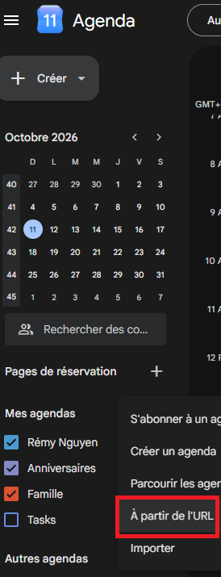
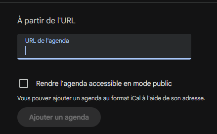
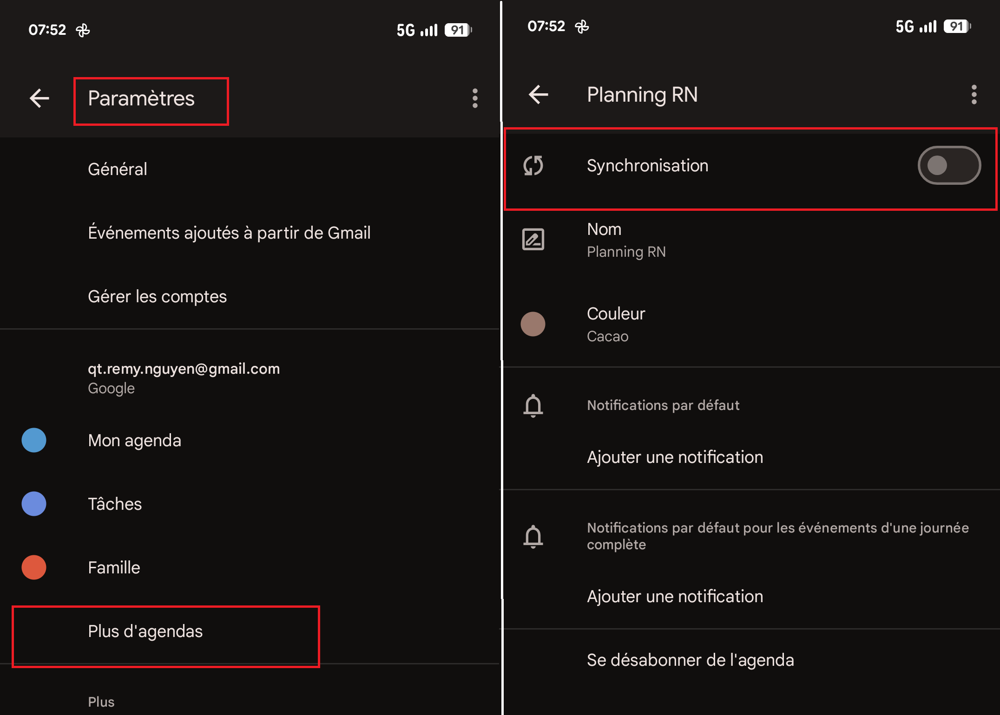

AVANT DE COMMENCER · RÉCUPÉRER MON LIEN
-
Dans l'application Planning Neurologie, ouvrez ⚙️ Préférences.
-
Dans la section Mon agenda, cliquez sur 📅 Afficher mon lien d'abonnement, puis sur Copier.

Votre lien est personnel : ne le partagez pas.
Google Agenda (sur ordinateur)
L'abonnement par adresse (URL) se fait depuis un ordinateur (pas le téléphone).
-
Ouvrez calendar.google.com et connectez-vous.

-
Dans la colonne de gauche, à côté de Autres agendas, cliquez sur +, puis sur À partir de l'URL.

-
Collez votre lien dans le champ URL de l'agenda.

-
Cliquez sur Ajouter l'agenda. Il apparaît sous Autres agendas, où vous pouvez le renommer ou changer sa couleur.

-
Synchronisation App android: allez dans Paramètres, cliquez sur Plus d'agendas, sélectionnez le Neuroplanning et Synchronisez.

Google met à jour les agendas abonnés de lui-même, en général en quelques heures et jusqu'à 24 h, et il n'existe pas de bouton pour forcer la mise à jour.
Pour voir un changement tout de suite, supprimez l'agenda puis ajoutez-le de nouveau avec le même lien.
iPhone / iPad
Application Calendrier.
Contenu à venir.
-
Réglages → Calendrier → Comptes → Ajouter un compte → Autre → Ajouter un calendrier avec abonnement. sinon exploratoire: suivre la trame google et calendar.google.com/calendar/syncselect pour synchro sur appareil apple
Mac
Application Calendrier.
Contenu à venir.
Outlook
Contenu à venir.
Questions fréquentes
Quand mon agenda est-il mis à jour ?
Le fichier est régénéré dans les minutes qui suivent une modification du planning. Ensuite, c'est votre application qui vient le relire :
de quelques minutes à 24 h selon l'application (Google est la plus lente, Apple permet de choisir la fréquence).
Comment lire les événements ?
- Matin : 9 h à 12 h 30. Après-midi : 13 h 30 à 17 h.
- Garde : de 18 h à 9 h le lendemain.
- Plusieurs postes sur le même créneau sont regroupés, par exemple « BIP ng + SAU ».
- Un ⚠ devant le titre signale un conflit non accepté dans le planning.
Pourquoi mes absences n'apparaissent-elles pas ?
Seuls les postes et les gardes sont exportés. Les absences ne figurent pas dans l'agenda.
Puis-je modifier ou supprimer un événement dans mon agenda ?
Non, l'agenda est en lecture seule : toute modification se fait dans le planning. Vous pouvez en revanche masquer l'agenda, le renommer ou changer sa couleur.
Un événement est en double ou n'a pas disparu
Attendez le prochain rafraîchissement de votre application. Si le problème persiste, supprimez l'agenda puis réabonnez-vous avec le même lien.
Quelle période l'agenda couvre-t-il ?
Une période glissante autour d'aujourd'hui : quelques mois avant et plusieurs mois après. Les événements trop anciens quittent l'agenda au fil du temps.
J'ai partagé mon lien par erreur, que faire ?
Dans ⚙️ Préférences → Mon agenda, cliquez sur Régénérer le lien : l'ancien cesse de fonctionner. Il faudra ensuite vous réabonner avec le nouveau lien.